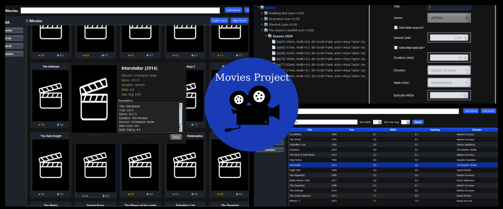

Work

Web Design
I built several projects on freecodecamp.org. Also I made a web app that finds a song and returns its lyrics.
See More
Android App Design
Experience with Android Studio; currently early-stage development of a fitness app.
See More

Movies Manager
A modern Java Swing application for managing movies and TV series. Features include table & gallery views, advanced search filters, IMDb & user ratings and a series tree with seasons and episodes.
How to try the demo:
- Click "Run Demo" below
- Wait for Replit to load
- Click the "Run" button (top-center)
- If GUI appears blank, click the "VNC" button